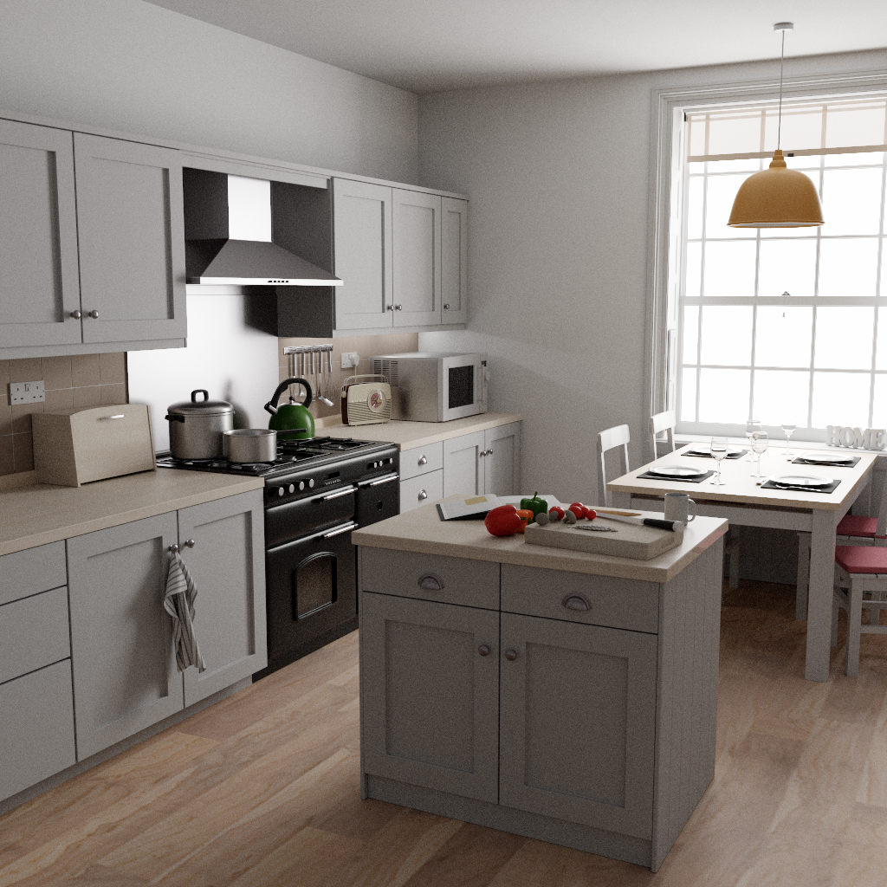
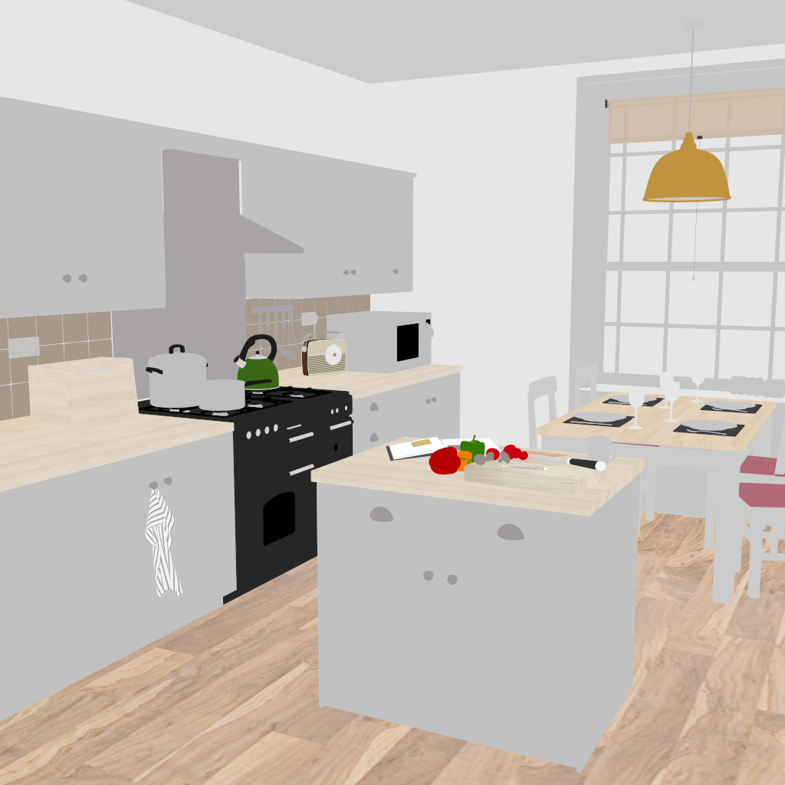
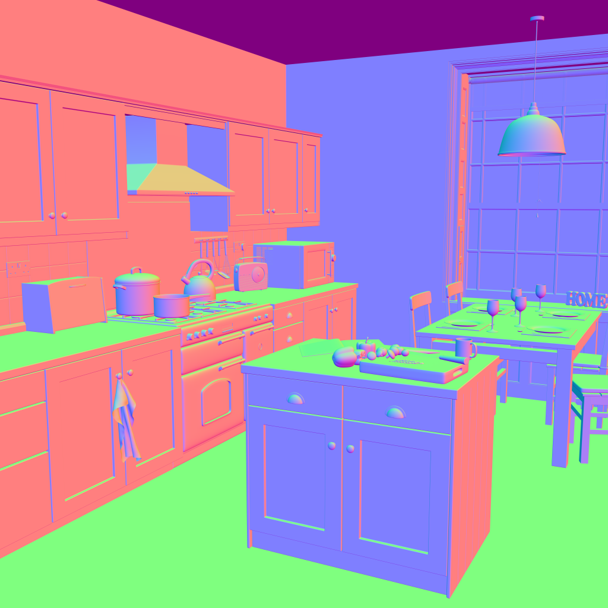
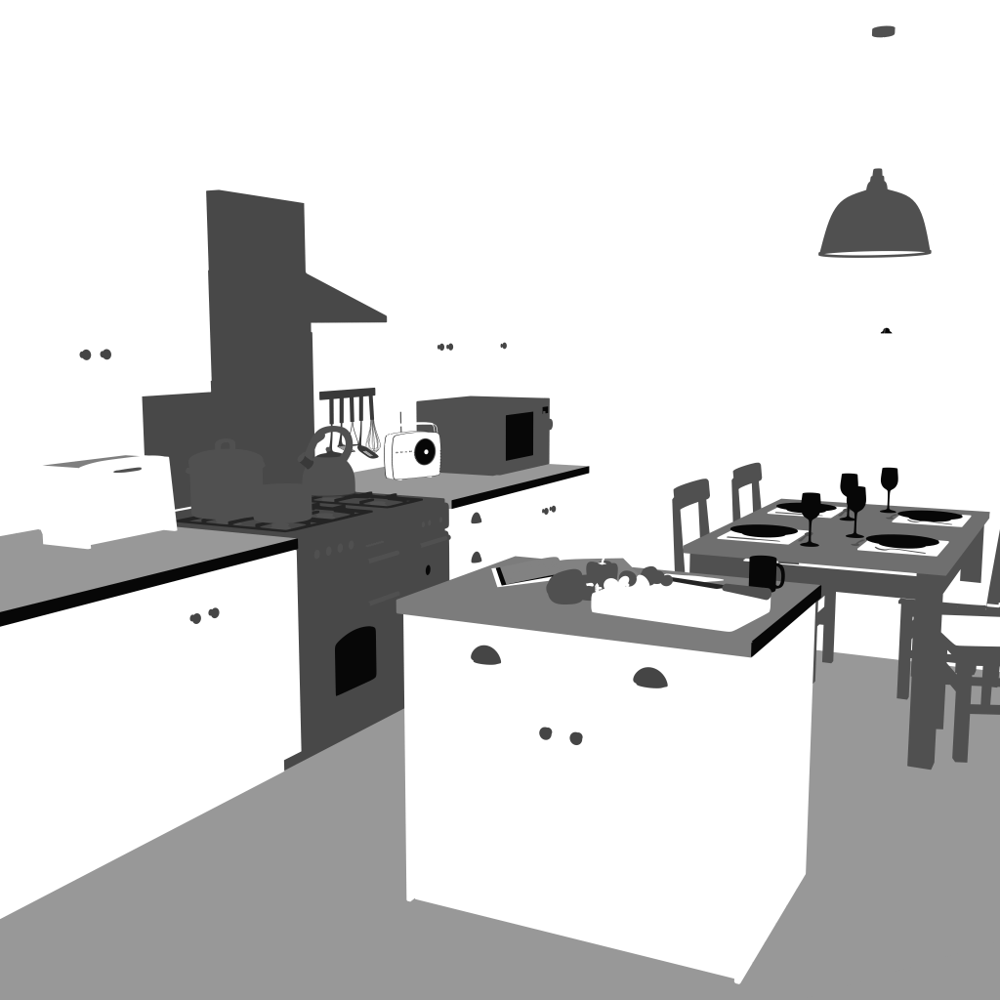
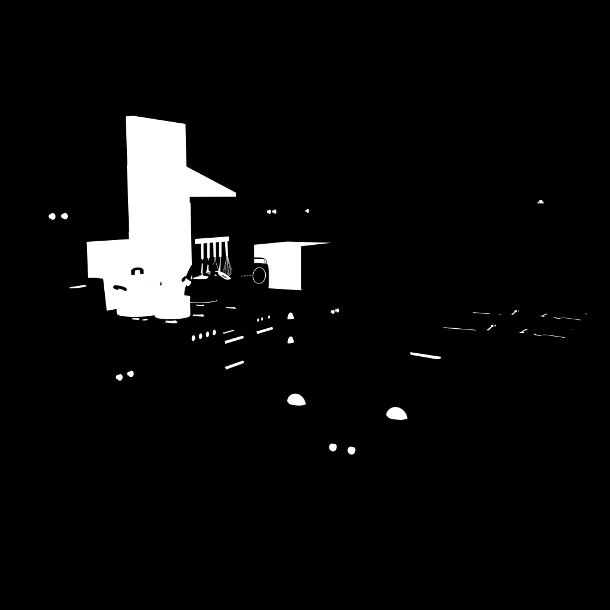
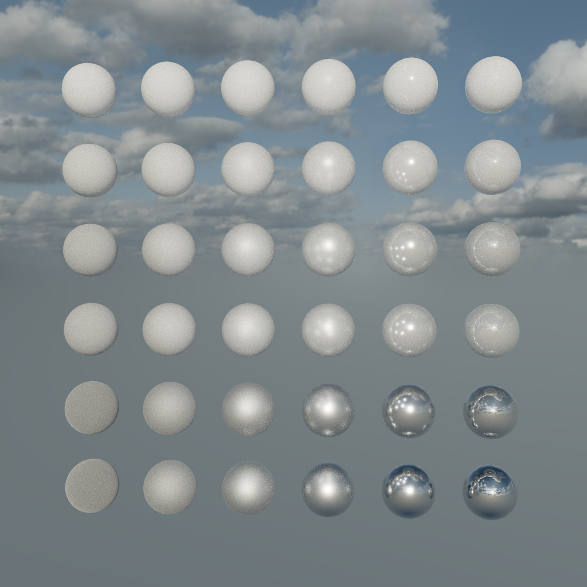
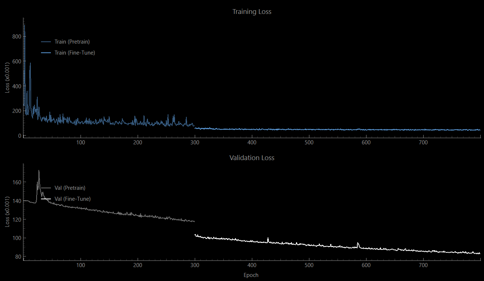
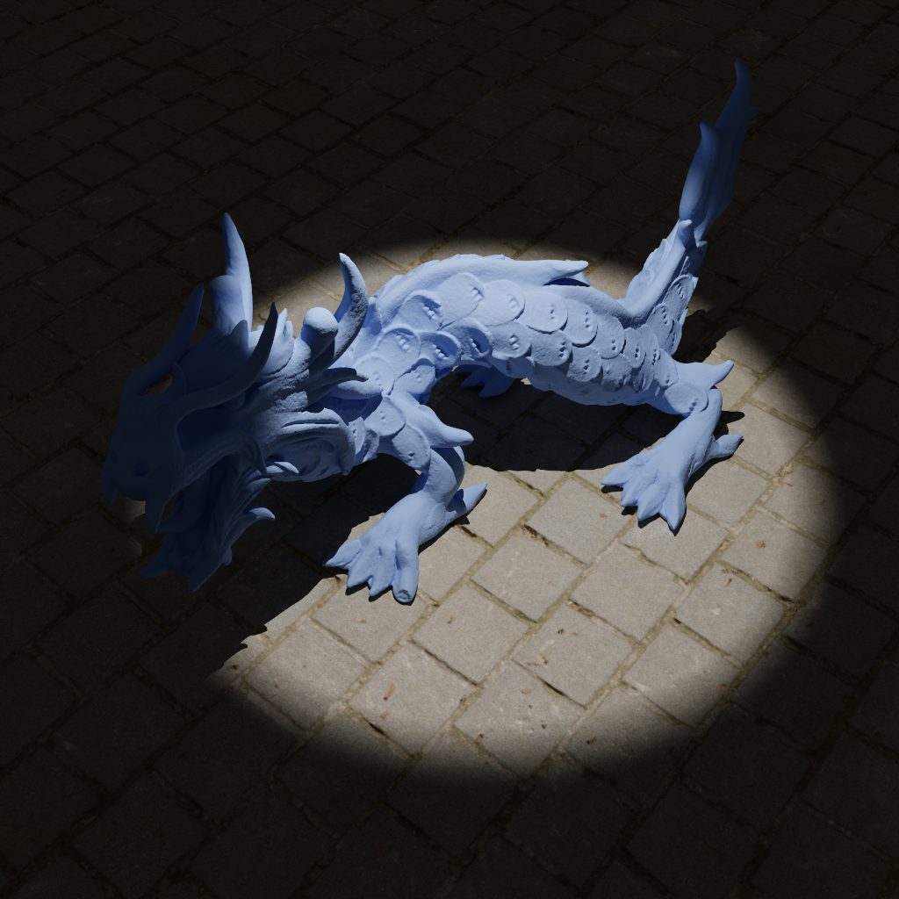
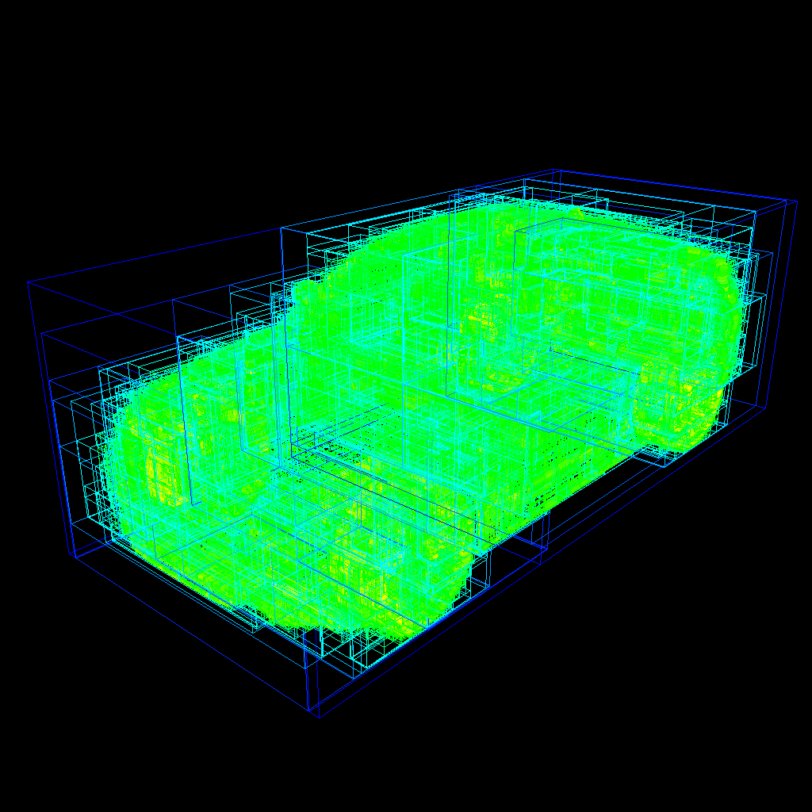
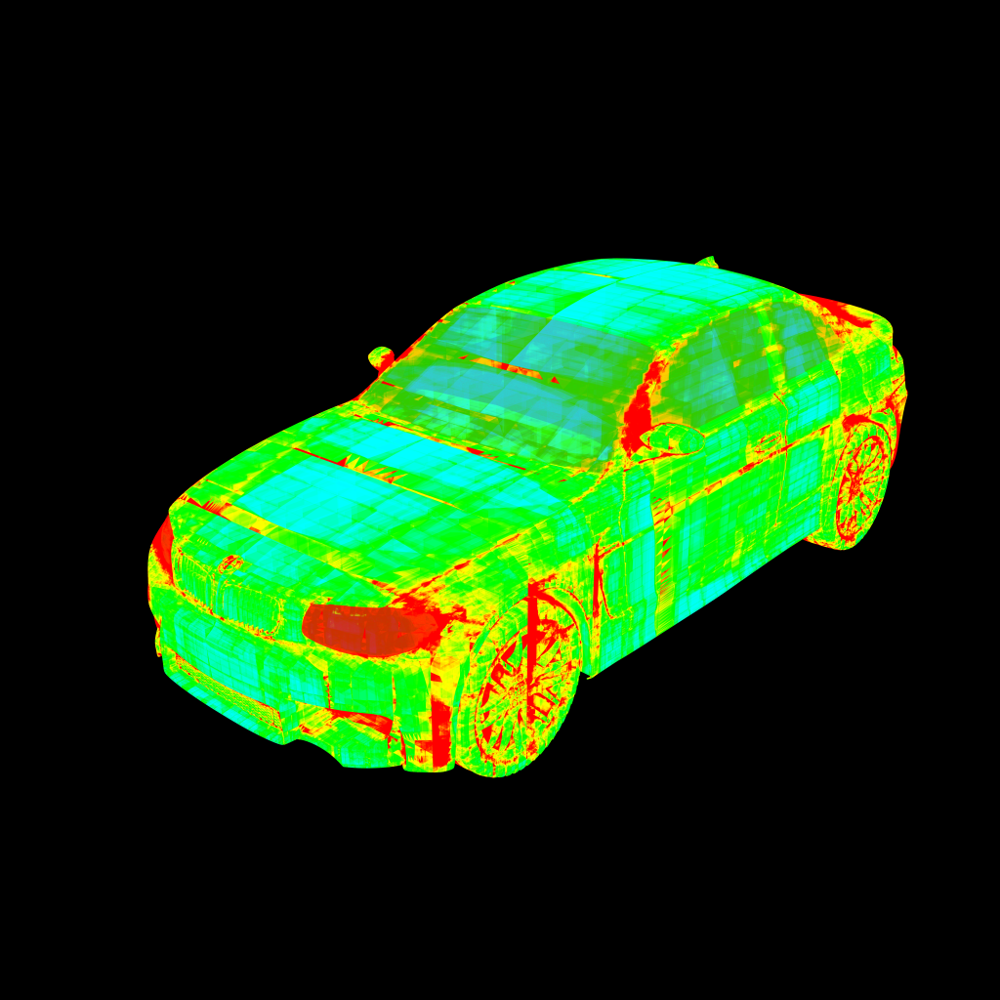

Gallery
Auxiliary Buffers
Combined
The following combined image will be used as reference for the auxiliary buffers below:

Kitchen scene courtesy of Jay-Artist and Benedikt Bitterli, license CC BY 3.0. (Model downloaded from Morgan McGuire's Computer Graphics Archive https://casual-effects.com/data.)
Albedo

Kitchen scene courtesy of Jay-Artist and Benedikt Bitterli, license CC BY 3.0. (Model downloaded from Morgan McGuire's Computer Graphics Archive https://casual-effects.com/data.)
Normal

Kitchen scene courtesy of Jay-Artist and Benedikt Bitterli, license CC BY 3.0. (Model downloaded from Morgan McGuire's Computer Graphics Archive https://casual-effects.com/data.)
Roughness

Kitchen scene courtesy of Jay-Artist and Benedikt Bitterli, license CC BY 3.0. (Model downloaded from Morgan McGuire's Computer Graphics Archive https://casual-effects.com/data.)
Metallic

Kitchen scene courtesy of Jay-Artist and Benedikt Bitterli, license CC BY 3.0. (Model downloaded from Morgan McGuire's Computer Graphics Archive https://casual-effects.com/data.)
Denoising
Please note that this denoiser prototype is not a great denoiser because of the limited amount of produceable scene variety. On other scenes, there may be noticeable artifacts and issues because of the lack of variety and the missing variance and gradient buffers from Bako et al's implementation. However, the image below represents a scene where the denoiser performs well. They were both rendered at 100 samples:
Noisy

Denoised
Loss Graph
The KPCN network was trained with 300 pretrain epochs and 500 fine-tune epochs.

Diffuse / Specular Split
Combined

Dragon model courtesy of XYZ RGB Inc. and the Stanford University Computer Graphics Laboratory.
Diffuse
Dragon model courtesy of XYZ RGB Inc. and the Stanford University Computer Graphics Laboratory.
Specular
Dragon model courtesy of XYZ RGB Inc. and the Stanford University Computer Graphics Laboratory.
BVH Debug
The image below will be used as the reference image for the BVH debug images.
BMW car model courtesy of Mike Pan and Morgan McGuire, license CC0/Public Domain. (Model downloaded from Morgan McGuire's Computer Graphics Archive https://casual-effects.com/data.)
BVH Bounds
Layer

BMW car model courtesy of Mike Pan and Morgan McGuire, license CC0/Public Domain. (Model downloaded from Morgan McGuire's Computer Graphics Archive https://casual-effects.com/data.)
Layer: All
Depth

BMW car model courtesy of Mike Pan and Morgan McGuire, license CC0/Public Domain. (Model downloaded from Morgan McGuire's Computer Graphics Archive https://casual-effects.com/data.)
Depth: Max
BVH Depth

BMW car model courtesy of Mike Pan and Morgan McGuire, license CC0/Public Domain. (Model downloaded from Morgan McGuire's Computer Graphics Archive https://casual-effects.com/data.)
Disintegration
Now, what happens when the path tracer breaks out the BVH traversal after a certain maximum depth? Use the slider below to find out.
BMW car model courtesy of Mike Pan and Morgan McGuire, license CC0/Public Domain. (Model downloaded from Morgan McGuire's Computer Graphics Archive https://casual-effects.com/data.)
Max Depth: 32